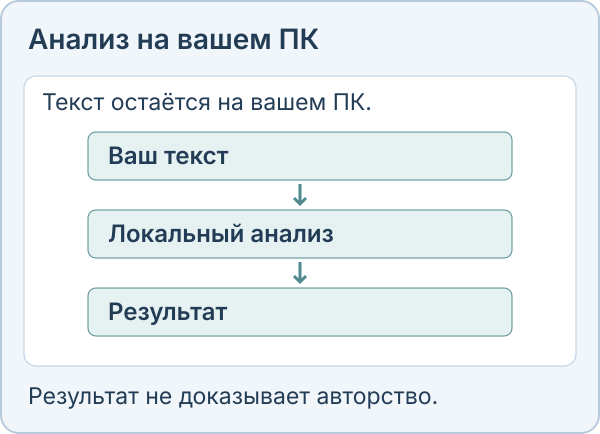

Офлайн-детектор ИИ-текста для Windows
Linda проверяет текст на вашем компьютере, поэтому для проверки он никуда не загружается. Поддерживаются английский, польский и русский. Программа подсвечивает фрагменты, на которые стоит посмотреть внимательнее, и сохраняет отчёт PDF. Результат никогда не доказывает, кто написал текст.

Две модели
Loupe: компактный детектор с возможностью работы на CPU. Assay использует более крупный ансамбль. Для загрузки моделей нужны интернет и место на диске; совместимость оборудования проверяется в приложении.
Насколько это точно
Это наши собственные замеры, а не независимый аудит. На русском Assay нашёл 80,3% текстов ИИ при 0,6% ложных срабатываний, но набор небольшой: 350 текстов ИИ и 350 человеческих, погрешность около 5 пунктов. Тексты, переписанные другой моделью, он находил в 59% случаев.
Офлайн не значит безошибочно
Ложные срабатывания случаются, а низкий результат не доказывает, что ИИ не использовали. Нельзя принимать решение о человеке только по этой оценке. Онлайн-демо устроено иначе и отправляет текст на сервер, поэтому для конфиденциальных текстов используйте программу.
Цена
Бесплатно для личного некоммерческого использования. Коммерческая лицензия стоит $10 разово для одного человека, $30 разово для команды до 10 человек или $500 в год для организации.